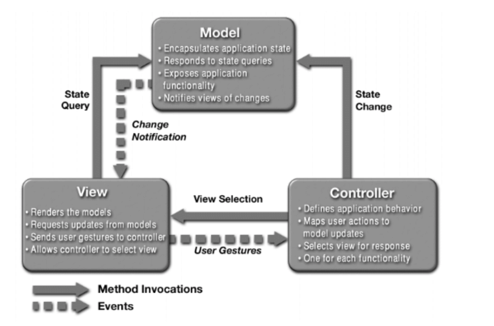

The MVC or Model View Controller pattern came out as part of Xerox Smalltalk
research project, it was initially developed for desktop application but subsequently
became a staple in web applications. At its core, it represents a clean separation
of concerns between different functionalities needed in building and hosting an application.
There are quite a few frameworks that use the MVC design pattern, popular one’s are:
Ruby on Rails (Ruby)
Express (JS)
Backbone (JS)
Angular (JS)
Laravel (PHP)
Zend (PHP)
Codeigniter (PHP)
Django (Python)
Flask (Python)
The below diagram shows a representation of MVC pattern:

Component of the MVC pattern
As can be seen the 3 components of this architecture are - Model which encapsulates data
and has methods to update state, notify state change and get state when queries for,
view which holds a business representation of the model and the controller that acts as
an interface between user action and view.
There are several advantages of this separation of concerns, some being:
Faster development process with different layers in large applications being developed by different developers.
The separation of model from the view allows multiple views to be created based on the scenario.
Changes in application interface does not impact all areas of an application
, the user interface may change but that does not always necessitate a change in the model.
Different layers being independently developed and maintained makes test
driven development easier, each layer will have methods exposed for another layer to consume and update
Some disadvantages of the MVC pattern include:
MVC pattern can lead to development of complex applications and can be avoided
if the application is small and will remain small
Security should be uniformly applied at all layers of this architecture
Now we will look at what does the future of MVC look like. It has been a very successful design
which has stood the test of time and paradigm shifts, it was initially developed for desktops in
an era when the web did not exist, then it was adopted by the web and continues to be used in mobile applications.
There are some variants that have come about in the last few years with mobile applications being the ubiquitous standard for applications
, some of these variants are:
MVP
: Model view presenter, here the presenter acts as a conduit between the model and view and the view takes in user input
MVVM
: Model-View-ViewModel, this is more popular in GUI based applications and here the ViewModel becomes the UI
VIPER
: View-Interactor-Presenter-Entity-Router, here the View transfers user input to the presenter
, Interactor holds the business logic, Presenter holds the view logic and prepares content for display
, Entity contains model objects which are used by the interactor, Router holds navigation logic.
VIPER scales well and can keep your project architecture clean and organized despite the number of features you add
thus, making it ideal for continuously evolving projects.